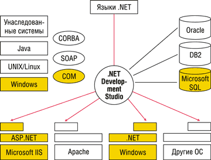

Мария Сысойкина
Новые версии основных средств разработки Borland будут полностью поддерживать Microsoft .NET Framework.
Представляя миру в феврале 2002 г. новую стратегию Borland (http://www.borland.com) по поддержке Microsoft .NET, Саймон Торнхилл, генеральный менеджер корпорации по решениям RAD, заявил: "Долгое время мы серьезно поддерживали платформу Microsoft. Но в связи с растущей популярностью Java и выходом на первые места ОС Linux ситуация на рынке поменялась, поэтому мы вынуждены были перейти на эти платформы. Однако в настоящий момент Microsoft снова возвращает себе былые позиции, начиная новую историю под названием .NET".
Что же представляет собой новая стратегия Borland и зачем она нужна? В этом мы и попробуем сегодня разобраться, но прежде чем отвечать на эти вопросы, вернемся к самой среде Microsoft .NET Framework.
13 февраля 2002 г. корпорация Microsoft (http://www.microsoft.com) официально объявила о выходе новой операционной среды .NET Framework и среды разработки приложений Visual Studio .NET. Эти продукты представляют собой основные фрагменты архитектуры Microsoft .NET.
Пока сам по себе переход на архитектуру .NET не означает модификации или появления новой версии Windows. Это новая, еще не совсем самостоятельная платформа, которая не заменяет собой ни Windows, ни механизмы COM, а существует параллельно им.
Впрочем, Borland, по словам Торнхилла, считает .NET самостоятельной платформой, отдельной от Windows. "Мы рассматриваем происходящее как эволюцию от Windows к .NET, и в ближайшее время людям будут нужны как .NET-приложения, так и приложения для Windows. Со временем .NET, возможно, вытеснит Windows, но пока нужны и те и другие приложения".
Центральный элемент архитектуры .NET - среда исполнения и разработки приложений .NET Framework, представляющая собой надстройку над ОС Windows. Это означает, что в отличие от обычных Windows-приложений, которые напрямую взаимодействовали с Win API, COM и т. д., приложения .NET взаимодействуют со средой Windows через функциональные элементы .NET Framework.
Приложения .NET реализуются в виде промежуточного кода на языке Microsoft Intermediate Language (MSIL). Затем этот код исполняется в среде Common Language Runtime (CLR) путем предварительной компиляции отдельных фрагментов программы или целого приложения.
Среда CLR - это, по сути, среда безопасного выполнения приложений, использующая механизм "управляемого кода" - Managed Code. Благодаря управляемому коду исполнительная среда автоматически управляет созданием, использованием, защитой и очисткой памяти, доступной приложению.
Помимо языков программирования, предлагаемых Microsoft в рамках VS.NET (VB.NET, C#, C++), уже сегодня некоторые языки программирования высокого уровня от независимых разработчиков (Perl, Cobol, FORTRAN, Smalltalk, Eifell и т.д.) предусматривают возможность создания .NET-приложений, т. е. компиляцию исходного текста приложения в байт-код MSIL.
Естественно, Borland не могла не обратить внимания на создание новой платформы, новой операционной среды, и 12 февраля 2002 г. (что примечательно, за день до официального начала поставок .NET Framework и VS.NET) вышел пресс-релиз Borland, в котором сообщалось, что компания собирается выпустить во второй половине этого года версии своих основных средств разработки с полной поддержкой .NET Framework.
Как именно будет реализована эта поддержка? Прежде всего в новой стратегии Borland необходимо выделить такие важные составляющие, как ориентация на использование XML Web-сервисов и на компиляцию приложений в управляемый MSIL-код.
На сегодняшний день все средства разработки Borland, включая Delphi, JBuilder (и Web Services Kit для Java), C++Builder и Kylix, уже позволяют разрабатывать приложения Web-сервисов, работающих в .NET. Полная разработка .NET-приложений с управляемым кодом будет реализована в линейке RAD-средств Borland (Delphi и C++) начиная со второй половины 2002 г.
Что же касается второй части поддержки .NET, то в течение почти двух месяцев с момента объявления новой стратегии Borland упорно хранила молчание, пресекая всяческие слухи о новом продукте. Даже о первом показе Delphi.NET на конференции Microsoft TechEd в апреле в пресс-релизе было лишь несколько строк. Наконец 6 мая на сайте Borland Community (http://community.borland.com) появилась статья о демонстрации Delphi.NET на SD West, где основные продукты Borland - Delphi 6, Kylix 2 и JBuilder 6 - получили весьма престижные награды Jolt Award, а сама корпорация была занесена в Jolt Hall of Fame. На самом деле демонстрировался еще не сам пакет Delphi.NET, а его предварительная демо-версия. Официальных комментариев и подробностей опять-таки не было. Да оно, в общем, и понятно: разработчики не хотели ничего объяснять до ежегодной конференции Borland.
Однако приведенный в статье "снимок" с экрана нового Delphi вызвал массу слухов и споров. Не дожидаясь BorCon и официальных подробностей, многие поклонники Borland начали активно выискивать достоинства и недостатки грядущего продукта и строить гипотезы о его работоспособности.
Как бы то ни было, но на конференции BorCon, проходившей с 18 по 22 мая в Анахейме, наконец-то были раскрыты довольно многие технические подробности нового продукта, да и не только его. Что касается поддержки .NET, то на конференции много внимания было уделено новой версии Delphi для .NET - данный проект был представлен под кодовым именем Aurora. Кроме того, было показано нечто абсолютно новое, нигде ранее не упоминавшееся, - язык для написания сценариев и разработки Web-сервисов под кодовым названием Charlotte. Итак, по порядку.
Новая версия Delphi для Windows
Седьмую версию Delphi нельзя считать полноценным инструментом Delphi.NET. В целом это будет просто очередная версия продукта, содержащая некие нововведения и улучшения. Однако помимо прочих новшеств в данной версии имеется и кое-что для .NET. В частности, компилятор будет выдавать предупреждения о несовместимости отдельных фрагментов кода с .NET, точнее, о невозможности использования тех или иных конструкций, классов и т. д. в случае компиляции приложения в .NET. И, наконец, в поставку Delphi 7 будет включена некая предварительная preview-версия Delphi для .NET.
Прежде чем говорить о поддержке .NET, перечислим те новые возможности, которые появятся в обычной версии Delphi 7 для Windows:
- вложенные типы и константы (т. е. декларации type и const теперь могут присутствовать в объявлении класса);
- поля и свойства классов;
- статические методы класса (методы класса без переменной Self, ссылающейся на информацию о типе класса);
- наследование, статические методы, свойства и объявление вложенных типов и констант в записях;
- "закрытые" классы (Sealed classes) - с запретом на дальнейшее наследование;
- "конечные" методы (Final methods) - с запретом переопределения;
- перегрузка свойств типа массив (пока планируется - возможно, в окончательной версии Delphi 7 этого не будет);
- атрибуты - теги, которые можно применять практически к любой декларации (имя класса, методы, поля, переменные, имена параметров).
Тег в данном случае содержит имя и необязательные аргументы. Тег и его аргументы пересылаются в откомпилированный файл. Компилятор и runtime-библиотека могут выбирать эти теги и производить с ними какие-то действия. Можно объявить собственные теги, объявив класс, предком которого является TCustomAttribute.
Например, тег GUID в качестве параметра имеет строковый аргумент, определяющий сам этот GUID:
TSomething = class(TInterfacedObject, ISomething)
[GUID('....')]
...
end;
|
А теперь рассмотрим компоненты Delphi для .NET, включенные в предварительную версию.
Компилятор Delphi для .NET в IL
Этот компилятор уже написан и успешно работает, что и было продемонстрировано на конференции. На одной из сессий зрителям была показана IDE Delphi 7 (это можно было определить по строке заголовка в главном окне). Созданный в этой среде проект был скомпилирован в приложение .NET Windows Forms - использовался компилятор командной строки DCCIL. Собранное таким образом приложение выполняется не только в среде Windows с .NET, но и на устройствах типа Tablet PC, поддерживающих .NET. По свидетельствам очевидцев, выполнение Delphi-приложения на Pocket PC было весьма впечатляющим зрелищем.
Вообще разработчики Borland обещают, что приложения Delphi.NET будут выполняться на всех платформах, поддерживающих .NET. Однако не исключено, что при переносе на некоторые аппаратные платформы понадобятся серьезные изменения в кодах именно .NET-приложения. Одна из возможных проблем заключается в том, что такие устройства, как сотовые телефоны и PDA, подразумевают ряд ограничений, связанных, например, с разрешением экрана. В полной версии Delphi .NET Borland предполагает поддерживать Compact Framework для .NET - т. е. среду .NET для переносимых устройств, которая весьма напоминает стандартную среду .NET, однако имеет и ряд существенных отличий.
VCL для .NET Component Framework
Библиотека VCL для .NET будет содержать следующие группы компонентов:
- визуальные компоненты библиотеки, совместимые с обычной VCL;
- невизуальные компоненты, совместимые и с VCL, и с CLX;
- ряд компонентов, построенных непосредственно на основе Microsoft .NET Framework.
Здесь необходимо сказать о тех трудностях, которые возникли при перенесении на платформу .NET визуальных компонентов. В принципе, библиотеки классов Delphi и .NET очень похожи, а следовательно, многие элементы в них легкосопоставимы, как, например, классы TObject и System.Object.
Однако именно VCL представляет собой отдельную область библиотеки классов Delphi, вызывающую ряд серьезных проблем при переносе в .NET - это, в частности, касается использования таких классов, как TButton, TForm и т. п. Основная причина сложностей - отсутствие в .NET эквивалента для класса TGraphicControl. Проектируя VCL, Borland намеренно решила обозначить различия между элементами управления, требующими дескрипторов (handles), и обходящимися без них. Очевидно, это сделано потому, что дескрипторы - "дорогой" ресурс, и чем меньше мы их используем, тем лучше.
В .NET такого различия нет, поэтому все реализованные в этой среде графические элементы управления взаимодействуют со средой через дескрипторы.
Разработчики из Borland предложили интересное решение проблемы. В.NET Framework есть область, аналогичная VCL. Это пространство имен Windows.Forms - очень специализированная часть библиотеки .NET, имеющая доступ к незащищенному коду (например, к драйверам графических плат или прямым вызовам Win32 API). Тем не менее эта часть библиотеки .NET гарантированно безопасна, даже если внутри она использует незащищенный код. Windows.Forms сильно отличается от всех остальных пространств имен, которые не были рассчитаны на обращение к незащищенным модулям. Разработчики Borland решили пойти аналогичным путем и в основном перестроили VCL, создав совершенно новое пространство имен, названное, соответственно, Borland. Фактически произошло отображение VCL на модель пространства имен Windows.Forms. Это привело к тому, что теперь в компонентах этой части библиотеки используются прямые вызовы Win32 API, что согласно концепции .NET гарантирует защищенность кода приложений.
Положительная сторона такого решения состоит в том, что появилась возможность легко перекомпилировать приложения и портировать существующий код, кроме тех случаев, когда используется низкоуровневое программирование с непосредственным обращением к "железу". Выходные приложения будут полностью отвечать стандартам .NET. Недостаток же решения заключается в том, что выходное приложение должно будет поставляться вместе со сборкой Borland (это приблизительно то же самое, что и сборка Delphi-приложения со средствами поддержки этапа исполнения).
Таким образом, появляется два варианта создания приложений, аналогично ситуации с Visual CLX. Если вы начинаете с нуля приложение, которое будет работать только в .NET, то, скорее всего, вы будете использовать пространство имен Windows.Forms. В противном случае при портировании в формат Win32 или из него придется использовать сборку Borland.
Разобравшись с основными особенностями предварительной версии, мы можем наконец перейти к версии Delphi для .NET, имеющей кодовое имя Galileo.
Delphi для .NET
Как было объявлено, Galileo - это не просто Delphi.NET, а .NET Development Studio, многоязыковая среда программирования, включающая в себя помимо Delphi еще несколько языков. Продукт обеспечивает полноценный доступ к .NET Framework, давая возможность использовать технологии ASP.NET, .NET Web-сервисы, WinForms и CF (Compact Framework).
Предусмотрено создание безопасного проверяемого кода в формате промежуточного языка MSIL, а также полноценное взаимодействие с другими .NET-языками.
Прежде всего в Delphi.NET можно создавать классы и компоненты, удовлетворяющие спецификациям CLS (Common Language Specification). В дальнейшем эти компоненты могут использоваться в любом языке программирования для .NET, поддерживающем эту спецификацию. Кроме того, инструментарий Delphi.NET может сам использовать подобные компоненты, написанные с учетом требований CLS, на любых других языках программирования для .NET.
Новый продукт сохраняет совместимость с кодом Delphi для Windows. В Delphi.NET будут реализованы многие возможности, аналогичные уже существующим в Windows-версиях. Так, библиотека VCL для .NET будет совместима с обычной VCL (а невизуальные компоненты - и с CLX), появляются предназначенные для .NET модули - DataSnap Direct, DataSnap BDE Local и DataSnap Middleware (ранее MIDAS). Вводятся расширения языка, использующие преимущества .NET, - вложенные типы, пространства имен, механизм сборки мусора (garbage collection), свойства и поля классов (они включены и в компилятор DCC32 для Delphi 7).
Новый продукт реализует поддержку Microsoft SQL Server, а также подключение (причем не через ADO) таких СУБД, как Oracle, DB2, Interbase, MySQL и Sybase. Кроме того, поддерживаются Web-серверные приложения для IIS и Apache (рисунок).
|  | Возможности разработки кросс-платформенных приложений в Galileo.
|
Новая стратегия Borland предоставляет свободу выбора платформы для создаваемых приложений. Если раньше с помощью RAD-средств, предлагаемых Borland, можно было создавать приложения для Windows, Java или Linux, то теперь список доступных платформ поплнился еще и средой .NET. Цель Borland - дать пользователю возможность с помощью одной и той же среды программирования создавать приложения для любой доступной платформы, а затем легко переносить их на другую поддерживаемую платформу.
В числе прочего стоит подробнее рассказать о компиляции и выполнении .NET-приложений. На форумах часто идут ожесточенные дискуссии по поводу того, будут ли .NET-приложения работать быстрее обычных, и если да, то за счет чего это достигается. Что касается приложений для .NET, написанных в Delphi, то можно ответить однозначно: такие приложения работают быстрее благодаря функциям оптимизации, реализованным в новом компиляторе. К тому же сам по себе используемый в среде .NET механизм, компилирующий отдельные фрагменты кода при обращении к ним, дает прекрасные возможности для оптимизации.
В оптимизационных тестах, предложенных на конференции ведущим инженером Borland Денни Торпом, .NET-приложение показало лучший результат по производительности, нежели исполнимый файл, созданный в Delphi 6. В отличие от Delphi 6 .NET производит ряд дополнительных оптимизаций в генерируемом байт-коде. Чтобы объяснить это подробнее, стоит рассмотреть в отдельности два процесса - компиляцию и выполнение .NET-приложений.
Компиляция .NET-"сборки" (эквивалент Delphi Package) сильно отличается от obj- или dcu-файлов. Обычные компиляторы нацелены на одну платформу и предполагают определенные допущения относительно компилируемого кода. Например, в Delphi вызов функции транслируется как инструкция CALL[Address]. В настоящее время реальный адрес (в обычных Windows-приложениях) генерируется с учетом того, что размер регистра в процессоре Pentium - 32 бита. Но в связи с тем, что .NET-приложения предполагают возможность портирования их на различные программные и аппаратные платформы, такие допущения уже не имеют смысла. На сегодняшний день адрес необязательно имеет 32-битное значение: на некоторых машинах это 64 бита, а для сотовых телефонов - 16 бит.
Таким образом, в промежуточном языке .NET (MSIL) инструкция CALL всегда сопровождается сборкой assembly.object.methodname[parameters]. Существующие допущения уже недействительны, и приходится соответствующим образом менять всю стратегию компиляции.
Говоря о компиляции приложений, нельзя не сказать и об их оптимизации. Одна из стратегий оптимизации, продемонстрированных Денни Торпом, - подстановка вызовов функций в компиляторе IL. Подстановка вызовов функций - это возможность компилятора убирать переходы во вложенные процедуры и наследовать их код так, как будто это часть вызываемой процедуры. Предположим, у нас есть три процедуры:
procedure DoThis; begin DoThat; end; procedure DoThat; begin DoThatOtherThat; end; procedure DoThatOtherThat; begin Inc(x); end; |
После того как Delphi-компилятор закончил компилировать код процедур DoThis и DoThat, мы получим необходимый код для выполнения инструкций CALL к процедурам DoThis и DoThatOtherThat, код для инструкции PUSH и соответствующую инструкцию POP для возвращения значения из стека.
Однако не удобнее ли просто выполнить Inc(x) внутри самой процедуры DoThis, вместо того чтобы проходить еще по двум процедурам? Вот как раз эту возможность и осуществляет подстановка вызова функции.
IL-компилятор использует еще одну оптимизационную технику - удаление общего подвыражения (common subexpression elimination). В Delphi такая тактика используется уже сейчас. Рассмотрим следующий код:
for i := 0 to 100 do begin x := (i mod 2)+1; writeln(IntToStr(i mod 2)); DoSomething(i mod 2); end; |
Вместо того чтобы трижды вычислять выражение I mod 2, Delphi и компилятор IL генерируют константу и подставляют ее вместо удаленного подвыражения.
Будущие расширения IL-компилятора будут включать в себя так называемый оптимизатор на основе профайлера (profiler based optimizer). Эта техника позаимствована отчасти из среды UNIX и основывается на использовании некоторой статистики, генерируемой программой-профайлером по результатам множественного выполнения приложения. Учитывая эту статистику, компилятор сможет проводить дополнительную оптимизацию.
И в завершение хотелось бы рассказать немного о новом скрипт-языке Charlotte. По словам представителей Borland, это простой, но мощный язык программирования, предназначенный специально для создания Web-сервисов. Charlotte может восприниматься как скриптовый язык, однако на самом деле у него будет собственный компилятор.
Charlotte создан специально для написания и использования Web-сервисов, поэтому имеет следующие специфические особенности:
- введено новое языковое соглашение о вызове (calling convention) - WSDL;
- система типов языка на основе XML Schema;
- удаленные вызовы;
- регулярные выражения встроены в язык;
- интероперабельность с C#, VB.NET, J#, Delphi for .NET и т. д.;
- использует любые варианты и компоненты .NET;
- позволяет создавать для .NET Web-сервисы, компоненты, приложения и т. д.
По заявлениям Borland, Charlotte в использовании легче, чем Visual Basic. Связано это с тем, что новый язык, в отличие от C#, VB.NET и Delphi.NET, не должен выполнять какие-то дополнительные действия, например, конвертировать типы данных или использовать соответствующие классы для реализации Web-сервисов. Charlotte неявным образом реализует возможности создания Web-сервисов непосредственно в языке.
Сейчас пока рано говорить о том, насколько хорош новый язык и целесообразно его создание: на конференции он не был показан в действии, было лишь заявлено о его разработке. Поэтому стоит подождать его появления, а уж потом делать выводы. Хотя о приблизительной дате выхода Charlotte тоже ничего не было сказано.
Что же касается Delphi, то о нем объявлено следующее: Delphi 7 (Aurora) выйдет во второй половине 2002 г., а.NET Development Studio (Galileo) - в 2003 г.